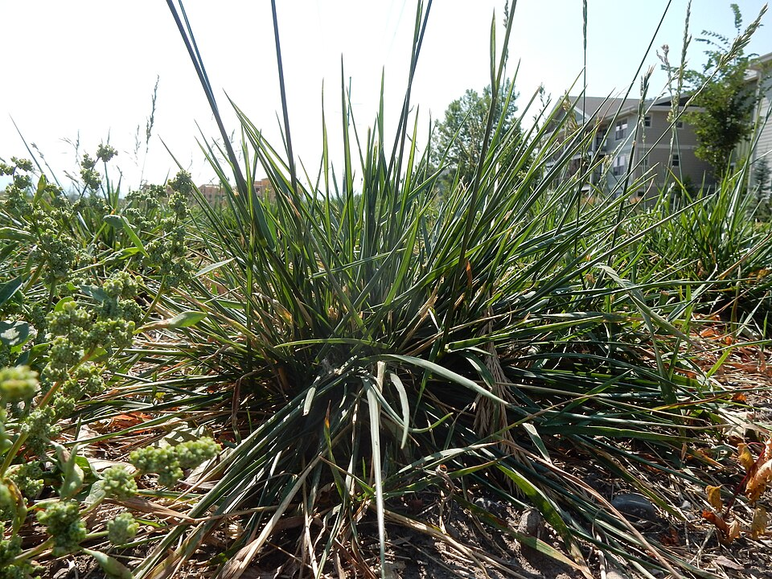
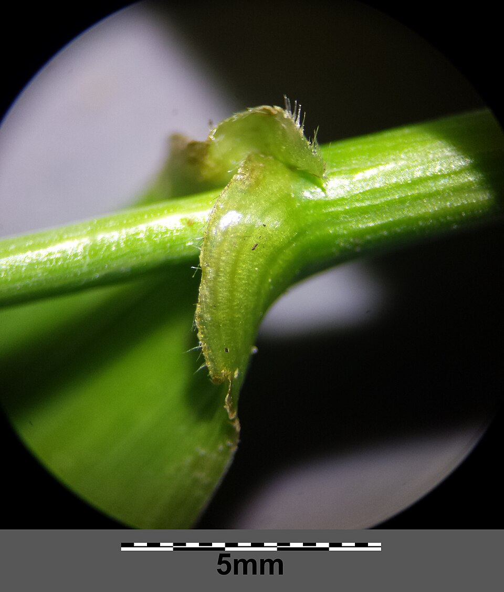

Tall Fescue
Schedonorus arundinaceus, Festuca arundinacea (older name)


- Also called
- Tall rye grass
- Kind
- grass · Poaceae
- Native to Vermont
- no
- Legal status
- Not on the Agency of Agriculture quarantine list (effective 2026-06-16; read 2026-10-30). (checked 2026-10-30)
- Look-alikes
- Meadow fescue; Orchardgrass; Smooth brome; Perennial ryegrass
Names
Tall fescue, Schedonorus arundinaceus, a grass in the family Poaceae. Go Botany lists it as tall rye grass; the UVM table uses tall fescue.
Range and habitat
Not native. Go Botany says it is not native to North America and is present in Vermont, in disturbed or maintained ground, meadows and fields, roadsides and lawns. The fire-effects page says it is native to northern Europe and, in the East, occurs in grazed woods, along roads, ditches and railroad tracks, in fallow and abandoned fields and meadows, and is best where annual rainfall is over 30 inches.
How to identify (by season; look-alikes and the key difference)
- Growth habit (UVM): a tall, coarse-textured bunchgrass, though it can produce short rhizomes. Leaves are coarse, medium to wide, and dark green with "corduroy" deep parallel grooves. Rolled bud shoot.
- Collar: a short auricle, usually with hairs, and a short, blunt (truncate) ligule (UVM); ligule 1 to 2 mm (Go Botany).
- Seedhead: an open panicle, 100 to 350 mm long, with spikelets of 3 to 9 florets on the branches.
- Leaf: blades 4 to 12 mm wide and 11 to 30 cm long. Sheaths hairless, off-white to light brown, mostly persisting on older leaves.
- Height: 30 to 200 cm.
- Look-alike: meadow fescue is "similar to tall fescue but slightly shorter", with medium green leaves and a short auricle without hairs (Meadow Fescue). UVM also lists perennial ryegrass (low to medium, narrow dark green leaves, shiny underside, claw-like auricles) as a different grass.
Through the year
Dates are typical for Vermont and shift with elevation and year; "approximate" means the source gave a season and the dates are a translation of it.
| When | What | Look for | What to do | Dates |
|---|---|---|---|---|
| Jun 1 to Jul 15 | flower (identify) | Coarse, tall bunchgrass with an open, branched seedhead. Leaves are dark green with deep parallel grooves (a "corduroy" feel). | - | approximate |
Role in the field
UVM says tall fescue is less palatable than other cool-season grasses. Cornell advises choosing low-endophyte varieties when seeding it for forage. The fire-effects page calls it a long-lived, aggressive perennial that can invade open natural communities and displace native species, and that is difficult to eradicate once dense clumps form; its examples are from Texas, and it spreads slowly by vegetation into wet or disturbed ground along roads.
What helps it thrive (light, soil and moisture, and how it is kept)
- Soil and water: tolerates drought and wet or flooded soils and prefers a soil pH of about 5.4 to 6.2; tolerates acidity, poor drainage and close grazing (Georgia extension); one extension source calls it surprisingly shade tolerant in humid climates (from a search summary of extension and agency pages, not a page read).
- Plant: a tall, coarse bunchgrass that is less palatable than other cool-season grasses (UVM table, read as text). The sources read give no mowing height or timing.
Managing for it and living with it
The sources read give no mowing advice for tall fescue in a Vermont field. The fire-effects page says that cut tall fescue makes new tillers from the root crown.
Legal status
Not on the Agency of Agriculture quarantine list as read on 2026-10-30. No other legal status was looked up.
Sources
- University of Vermont Extension, Characteristics of Forage and Pasture Grasses Found in the Northeast U.S., Sid Bosworth, Extension Forage Agronomist, January 2014 (a 4-page table): https://www.uvm.edu/d10-files/documents/2024-10/Forage_Grass_Characteristics_ID_NE_2014.pdf (read as text 2026-10-30)
- Native Plant Trust, Go Botany, Schedonorus arundinaceus: https://gobotany.nativeplanttrust.org/species/schedonorus/arundinaceus/ (read through a summarizing fetch 2026-10-30)
- USDA Forest Service, Fire Effects Information System, Schedonorus arundinaceus (tall fescue): https://www.fs.usda.gov/database/feis/plants/graminoid/scharu/all.html (read through a summarizing fetch 2026-10-30)
- Cornell University, Jerry H. Cherney and Debbie J. R. Cherney, Intensive Grass Management for Dairy Cows (results of a 1997 heading-date trial at eight New York sites; the file is hosted by the Pennsylvania grazing guide): https://grazingguide.net/pdpforage/Materials/CuttingMgt/Intensive_Grass_Mgt_for_Dairy_Cornell.pdf (read as text 2026-10-30)
- Vermont Agency of Agriculture, Food and Markets, quarantine list (effective June 16, 2026): https://agriculture.vermont.gov/node/11701 (read through a summarizing fetch 2026-10-30)
- USDA Forest Service, Fire Effects Information System, none: https://www.fs.usda.gov/database/feis/plants/graminoid/None/all.html (read through a summarizing fetch 2026-11-01)
- University of Georgia Forages, Tall fescue: https://georgiaforages.caes.uga.edu/species-and-varieties/cool-season/tall-fescue.html (search summary, not read, 2026-11-09)
- University of Wisconsin, Forage fescues in the northern USA: https://cias.wisc.edu/grazing/forage-fescues-in-the-northern-usa (search summary, not read, 2026-11-09)
What this page is based on
Kind of source: mixed (a Vermont Extension identification table, a regional flora, a federal fire-effects database)
What was read: UVM Extension forage grass table (Bosworth 2014) read as text; Go Botany, the USDA Forest Service fire-effects page (under its older code) and the Cornell summary read on 2026-10-30. Go Botany lists leaf texture and rhizomes both ways and does not describe the auricle. The calendar window translates the Cornell heading dates for two tall fescue varieties at New York sites in 1997 (June 1 to 14) and flowering windows from other states; no Vermont date was found. "Festuca arundinacea" as an older name is general botanical usage, not from a source read. Habitat needs (light, soil, regeneration, response to cutting) added 2026-11-01 from the USDA Forest Service Fire Effects Information System species review (summarizing fetch); the review is national in scope and the Northeast details are those it names. Habitat needs added 2026-11-09 from search summaries of extension and agency pages for this plant (not read); treat them as pointers, not as read sources.
Last checked: 2026-10-30
Vermont Woodland Owner's Reference, built 2026-11-09. Rules and dates here are summaries, not legal advice; dates shift with elevation and year. Photo and recording credits · The text is by Loop Works, CC BY 4.0 (pictures and recordings keep their own licenses) · Note: _reference/US-VT/Species/Tall Fescue.md